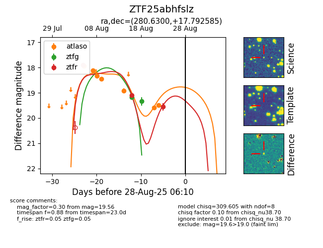

Target ZTF25abhfslz at 2025-08-28 10:07, see:
FINK: fink-portal.org/ZTF25abhfslz
Lasair: lasair-ztf.lsst.ac.uk/objects/ZTF25abhfslz
ALeRCE: alerce.online/object/ZTF25abhfslz
alt names
ZTF25abhfslz (ztf,fink)
coordinates:
equatorial (ra, dec) = (280.6300,+17.79258)
galactic (l, b) = (47.9390,+9.92173)
photometry
last atlaso=19.50, ztfg=19.34, ztfr=19.56
7 atlaso, 2 ztfg, 3 ztfr detections
